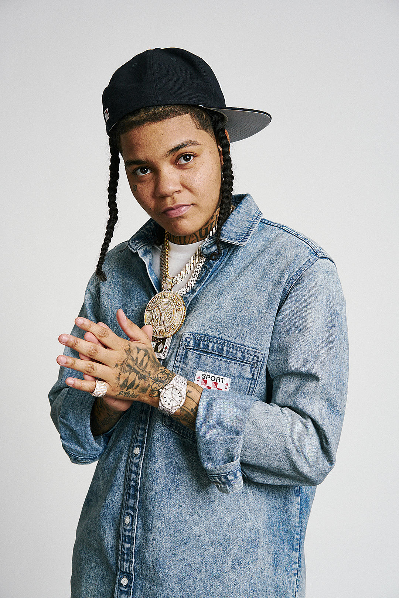

Young M.A

Young M.A at her XXL interview photo shoot
Here's a timeline of Young M.A's life:
- 1992 - Born in Brooklyn, New York
- 2010 - Graduated from Sheepshead Bay High School
- 2014 - Her song Brooklyn Chiraq goes viral
- 2016 - She releases her first single Ooouuu which reaches #19 on the Billboard Hot 100
- 2017 - Ooouuu achieves Platinum certification in the U.S.
- 2018 - Featured on the Forbes 30 Under 30
- 2019 - Releases her debut album Herstory in the Making in September